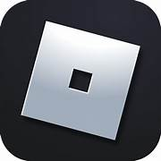

What is roblox?

Roblox (/ˈroʊblɒks/ ROH-bloks) is an online game platform and game creation system developed by Roblox Corporation that
allows users to program and play games created by themselves or other users. Created by David Baszucki and Erik Cassel in
2004 and released in 2006, the platform hosts user-created games of multiple genres coded in the programming language Lua.
Early in Roblox's history, it was relatively small, both as a platform and as a company. Roblox began to grow rapidly in
the second half of the 2010s, and this growth was accelerated by the COVID-19 pandemic.[10][11]
Roblox is free to play, with in-game purchases available through a virtual currency called Robux.
As of August 2020, Roblox had over 164 million monthly active users, including more than half of all American children
under 16.[12][13] Although Roblox has received generally positive reviews from critics, it has faced criticism for its
moderation, microtransactions, and allegations of exploitative practices toward children.
Roblox Studio
.jpg)
Roblox allows players to create their own games using its proprietary engine, Roblox Studio, which can then be played by
other users.[14] Games, officially referred to as "experiences" on the platform,[15][16] are made with a derivative of
the language Lua named Luau.[17] Users are able to create purchasable content through one-time purchases, known as "game
passes", as well as microtransactions which can be purchased more than once, known as "developer products" or "products
".[18][19] The majority of games produced using Roblox Studio are developed by minors, and a total of 20 million games a
year are produced using it.